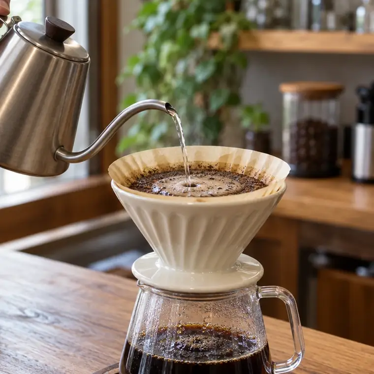

日替わりのおすすめ
フィナンシェ300円
焦がしバターの香りが立つ、焼き上がりから半日がいちばんの菓子。浅煎りの酸味とよく合います。
8:00〜18:00 営業水曜定休

席の半分以上が、窓に向いたカウンターです。隣と目が合わないので、本を読む人も、外を眺める人もいます。
カフェオレ（650円）は、ミルクを多めにできます。紅茶やジュースは置いていません。
大丈夫です。席が埋まっているときだけ、90分を目安にお願いしています。
電話やSNSでの取り置きは受けていません。早い時間ほど種類がそろっています。
電源はカウンターに3口あり、ご自由にお使いください。Wi-Fiはありません。